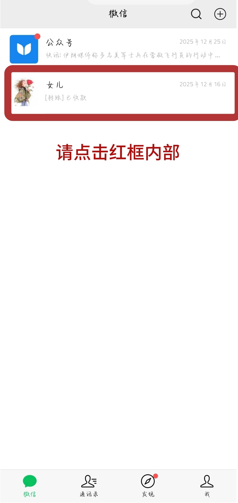
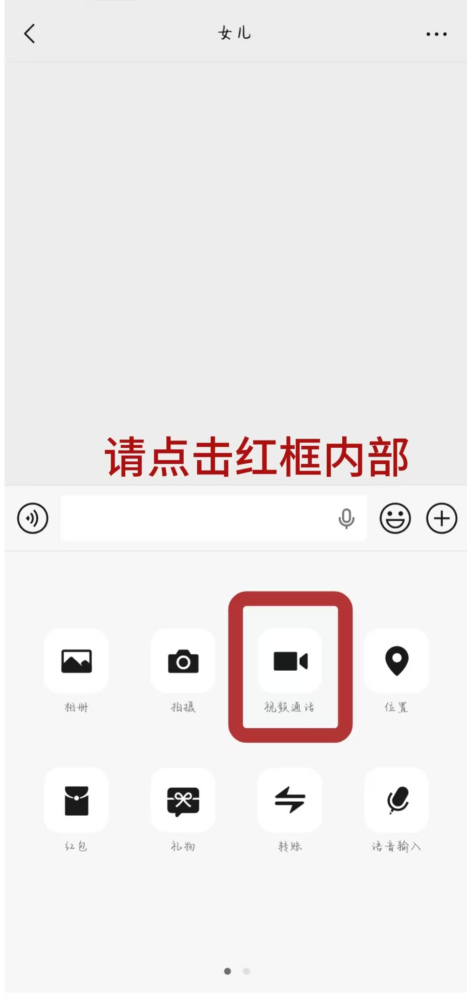
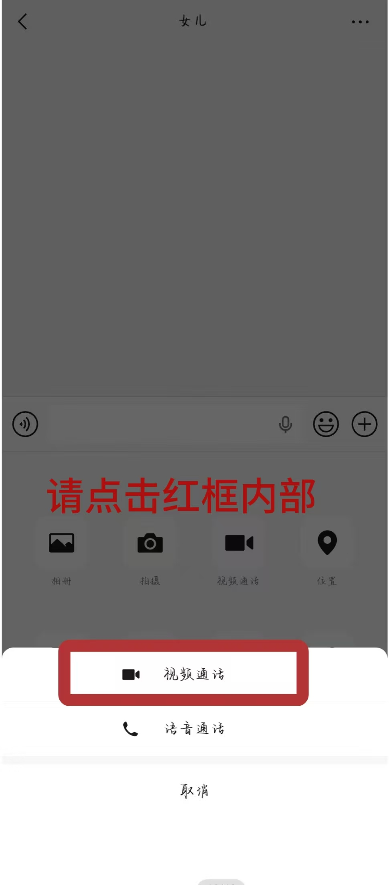

📱 项目简介
这是一款专门为老年人设计的 Android 辅助工具。通过系统无障碍服务，以微信视频电话为例自动识别微信界面中的“女儿”聊天框和“视频通话”按钮，并用红色边框高亮 + 语音提示的方式，一步步引导老人完成视频通话，无需任何学习成本。
✨ 核心功能
- 🔍 自动检测微信聊天列表中的指定联系人（例如“女儿”）
- 🟥 在目标区域绘制红色边框，视觉引导点击
- 🗣️ 同步语音提示（TTS 语音合成），适合视力不佳的老人
- 📞 进入聊天界面后，自动引导“视频通话”按钮
- ⚙️ 无需 root，只需开启无障碍服务即可使用
🖼️ 演示效果

微信列表页 - 红框标出“女儿”聊天框

点击红框后 - 引导点击“视频通话”

聊天界面 - 红框标出“视频通话”按钮
※ 请将你的模拟器/真机截图放入 images 文件夹，并重命名为 screenshot1.jpg、screenshot2.jpg
📥 下载 APK
点击下方按钮下载安装包，安装后按提示开启无障碍服务即可使用。
⬇️ 下载 AssistGuide 安装包※ 请将生成的 app-release.apk 文件放到项目中的 apk 文件夹内（需新建 apk 文件夹）
📖 使用说明
- 安装 APK 后打开 App，点击“开启无障碍服务”。
- 在系统无障碍设置中，找到“AssistGuide”并开启服务，授予悬浮窗权限。
- 返回 App，点击“开始引导”。
- 打开微信，在聊天列表页面等待 2 秒，即可看到红色边框和语音提示。
- 点击红框区域，进入聊天界面后会自动引导“视频通话”按钮。
🛠️ 技术实现
- Android AccessibilityService（无障碍服务）
- WindowManager 悬浮窗绘制红框
- TextToSpeech 语音合成
- 节点遍历与模糊匹配算法